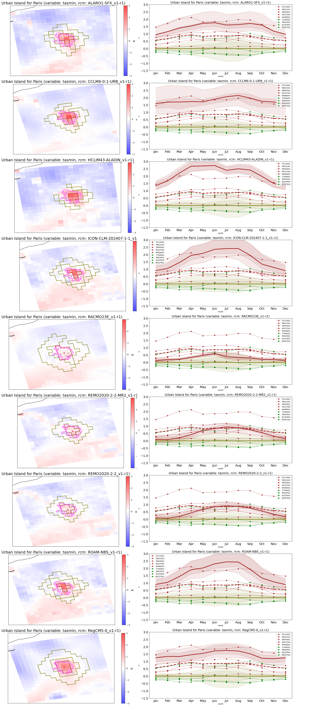

Urban and rural surrounding areas selection#
Load libraries#
Here we load the required libraries to execute the notebook. Note that specific code from dedicated scripts (utils.py, urban_areas.py, …) is also loaded here.
%load_ext autoreload
%autoreload 2
!echo $CONDA_DEFAULT_ENV
/mnt/CORDEX_CMIP6_tmp/user_tmp/jdiezsierra/conda_envs/evaltools
import os
import numpy as np
import pandas as pd
from urclimask.GHCNd_stations import get_valid_timeseries, inside_city
from urclimask.UHI_analysis import UrbanIsland
from urclimask.urban_areas import UrbanVicinity
from urclimask.utils import load_ucdb_city, traverseDir
import matplotlib.pyplot as plt
from PIL import Image
from tools import (
check_equal_period,
fix_360_longitudes,
open_datasets,
standardize_unit,
)
save_results_path = os.path.abspath(
os.path.join(os.getcwd(), "..", "intermediate-results")
)
save_figure_path = os.path.abspath(os.path.join(os.getcwd(), "..", "plots"))
CORDEX-EUR-CMIP6#
city = "Paris"
lon_city = 2.35
lat_city = 48.85
domain = "EUR-11"
model = "REMO"
scenario = "evaluation"
urban_var = "sfturf"
urban_th = 40
urban_sur_th = 10
orog_diff = 100
sftlf_th = 70
ratio_r2u = 2
min_city_size = 8
lon_lim = 1
lat_lim = 1
variable = "tasmin"
period_star = "1991"
period_stop = "2020"
period = slice(period_star, period_stop)
domain_resolution = int(domain.split("-")[1])
CMIP6#
mip_era = "CMIP6"
driving_source_id = "ERA5"
frequency = "mon"
dsets = open_datasets(
[variable],
frequency=frequency,
driving_source_id=driving_source_id,
mask=True,
add_missing_bounds=False,
)
# delete simulatios with not urban static variable
to_delete = [dset for dset, ds in dsets.items() if urban_var not in ds.variables]
for dset in to_delete:
del dsets[dset]
for dset in dsets.keys():
dsets[dset] = dsets[dset].sel(time=period).compute()
for dset in dsets.keys():
if not check_equal_period(dsets[dset], period):
print(f"Temporal coverage of {dset} does not match with {period}")
Temporal coverage of CORDEX-CMIP6.EUR-12.ICTP.ERA5.evaluation.r1i1p1f1.RegCM5-0.v1-r1.mon.v20250415 does not match with slice('1991', '2020', None)
for dset in dsets.keys():
dsets[dset] = standardize_unit(dsets[dset], variable)
Define urban areas and vicinity#
### Load city shapefile
root_aux_data = "/mnt/CORDEX_CMIP6_tmp/aux_data/"
ucdb_city = load_ucdb_city(root_aux_data, city)
Load observations for Paris#
var_map = {
"tas": "TAVG",
"tasmin": "TMIN",
"tasmax": "TMAX",
"pr": "PRCP",
"sfcWind": "SNWD",
}
root = "/mnt/CORDEX_CMIP6_tmp/aux_data/PARIS_surface_weather_data/"
files_obs_paris = list(traverseDir(root, ".csv"))
files_obs_paris = [f for f in files_obs_paris if "198001" in f]
df_all = []
for file in files_obs_paris:
if variable == "pr":
var_paris = "RR1"
elif variable in ["tas", "tasmax", "tasmin"]:
var_paris = "T"
elif variable == "sfcWind":
var_paris = "FF"
df = pd.read_csv(file, sep=";", decimal=",", na_values=["", " "])
df["DATE"] = pd.to_datetime(df["DATE"], format="%Y%m%d%H")
df.set_index("DATE", inplace=True)
df = df.sort_index()
station_code = df["POSTE"].iloc[0]
station_name = file.split("/")[-1].split("_")[-1].split(".csv")[0]
if variable == "tasmax":
df_aux = df[[var_paris]].resample("D").max()
elif variable == "tasmin":
df_aux = df[[var_paris]].resample("D").min()
else:
df_aux = df[[var_paris]]
df_var = pd.DataFrame(index=df_aux.index)
df_var[var_map.get(variable, None)] = df_aux[var_paris]
df_var["NAME"] = file.split("/")[-1].split("_")[-1].split(".csv")[0]
df_var["code"] = station_code
df_all.append(df_var)
df_obs = pd.concat(df_all)
Load static variables#
Load static variables, such as urban fraction (sfturf), terrain elevation (orography) or land-sea fraction (sftlf).
rcm_names = []
for dset, ds in dsets.items():
ds = fix_360_longitudes(ds, lonname="lon")
ds_sfturf = ds[[urban_var]].compute()
ds_orog = ds[["orog"]].compute()
ds_sftlf = ds[["sftlf"]].compute()
try:
rcm_name = ds.attrs["model_id"] + "_" + ds.attrs["rcm_version_id"]
except Exception:
rcm_name = ds.attrs["source_id"] + "_" + ds.attrs["version_realization"]
rcm_names.append(rcm_name)
# Add parameters to the function
URBAN = UrbanVicinity(
urban_sur_th=urban_sur_th,
orog_diff=orog_diff,
sftlf_th=sftlf_th,
ratio_r2u=ratio_r2u,
min_city_size=min_city_size,
lon_city=lon_city,
lat_city=lat_city,
lon_lim=lon_lim,
lat_lim=lat_lim,
model=model,
domain=domain,
urban_th=urban_th,
urban_var=urban_var,
)
# Crop area around de city
ds_sfturf = URBAN.crop_area_city(ds=ds_sfturf, res=domain_resolution)
ds_orog = URBAN.crop_area_city(ds=ds_orog, res=domain_resolution)
ds_sftlf = URBAN.crop_area_city(ds=ds_sftlf, res=domain_resolution)
# Define masks using the parameters above
sfturf_mask, sfturf_sur_mask, orog_mask, sftlf_mask = URBAN.define_masks(
ds_sfturf=ds_sfturf,
ds_orog=ds_orog,
ds_sftlf=ds_sftlf,
)
# Define rural vicinity areas
urmask = URBAN.select_urban_vicinity(
sfturf_mask=sfturf_mask,
orog_mask=orog_mask,
sftlf_mask=sftlf_mask,
sfturf_sur_mask=sfturf_sur_mask,
)
# We can plot the masks and the urban vs vicinity areas. The latter are are passed via the `urban_areas` parameter. They are hidden if set to `None`.
fig = URBAN.plot_static_variables(
ds_sfturf=ds_sfturf,
ds_orog=ds_orog,
ds_sftlf=ds_sftlf,
sfturf_mask=sfturf_mask,
orog_mask=orog_mask,
sftlf_mask=sftlf_mask,
urban_areas=urmask,
)
plt.savefig(
f"{save_figure_path}/CMIP6_Paris_static_{variable}_{rcm_name}.png",
bbox_inches="tight",
)
## Calculate Urban Heat Island (UHI)
ds_RCM = ds[[variable]]
ds_RCM = URBAN.crop_area_city(ds=ds_RCM, res=domain_resolution)
# Load obs data
output_file = "/mnt/CORDEX_CMIP6_tmp/aux_data/PARIS_surface_weather_data/Data_MF_1980-2017.csv"
radious = 0.5
stan_data = pd.read_csv(output_file)
stan_data["code"] = stan_data["code"].astype(str)
stan_data = stan_data.loc[stan_data["dist"] < radious]
valid_obs, time_series_obs, ds_RCM_period = get_valid_timeseries(
city,
stan_data,
ds_RCM,
df_obs,
variable,
idate="1991-01-01",
fdate="2020-12-31",
divide=1,
)
valid_obs = inside_city(valid_obs, ucdb_city)
### Compute the annual cycle climatology of anomalies with respect to rural vicinity mean
UHI = UrbanIsland(
ds=ds_RCM[variable],
urban_vicinity=urmask,
rcm=rcm_name,
anomaly="abs",
obs_attributes=valid_obs,
obs_timeseries=time_series_obs,
)
## Plot the data
fig = UHI.plot_UI_map(city_name=city, ucdb_city=ucdb_city, vmax=3)
plt.savefig(
f"{save_figure_path}/CMIP6_Paris_UHI_map_{variable}_{rcm_name}_{period.start}-{period.stop}.png",
bbox_inches="tight",
)
fig = UHI.plot_UI_annual_cycle(
percentiles=[5, 25], gridcell_series=True, city_name=city, vmax=3, vmin=-1.5
)
plt.savefig(
f"{save_figure_path}/CMIP6_Paris_Annual_cycle_{variable}_{rcm_name}_{period.start}-{period.stop}.png",
bbox_inches="tight",
)
rcm_names = np.sort(rcm_names)
imgs = [
Image.open(
f"{save_figure_path}/CMIP6_Paris_UHI_map_{variable}_{rcm_name}_{period.start}-{period.stop}.png"
)
for rcm_name in rcm_names
]
imgs = [img.crop(img.getbbox()) for img in imgs]
w, h = imgs[0].size
final_img = Image.new("RGB", (1 * w, len(imgs) * h), "white")
for n_i, img in enumerate(imgs):
final_img.paste(img, (0, n_i * h))
final_img.save(
f"{save_figure_path}/CMIP6_Paris_UHI_map_{variable}_{period.start}-{period.stop}.png"
)
imgs = [
Image.open(
f"{save_figure_path}/CMIP6_Paris_Annual_cycle_{variable}_{rcm_name}_{period.start}-{period.stop}.png"
)
for rcm_name in rcm_names
]
imgs = [img.crop(img.getbbox()) for img in imgs]
w, h = imgs[0].size
final_img = Image.new("RGB", (1 * w, len(imgs) * h), "white")
for n_i, img in enumerate(imgs):
final_img.paste(img, (0, n_i * h))
final_img.save(
f"{save_figure_path}/CMIP6_Paris_Annual_cycle_{variable}_{period.start}-{period.stop}.png"
)
img1 = Image.open(
f"{save_figure_path}/CMIP6_Paris_UHI_map_{variable}_{period.start}-{period.stop}.png"
)
img2 = Image.open(
f"{save_figure_path}/CMIP6_Paris_Annual_cycle_{variable}_{period.start}-{period.stop}.png"
)
img1 = img1.crop(img1.getbbox())
img2 = img2.crop(img2.getbbox())
w1, h1 = img1.size
w2, h2 = img2.size
new_w2 = int(w2 * h1 / h2)
img2 = img2.resize((new_w2, h1), Image.LANCZOS)
final_img = Image.new("RGB", (w1 + w2, h1), "white")
final_img.paste(img1, (0, 0))
final_img.paste(img2, (w1, 0))
final_img.save(
f"{save_figure_path}/CMIP6_Paris_{variable}_{period.start}-{period.stop}.png"
)
final_img
